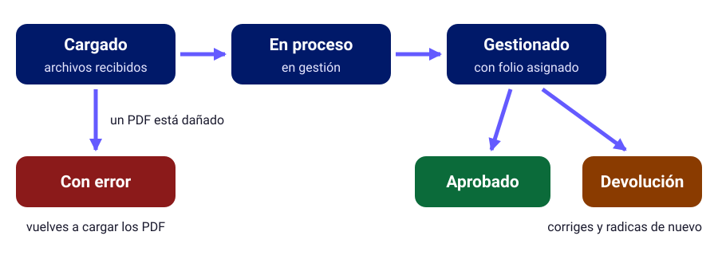

Practicar Radicación
Simuladores para practicar el proceso sin afectar radicaciones reales
Elige tu simulador
Por ahora estos accesos te llevan a la guía de cada perfil. El simulador interactivo, con
su formulario y validaciones, es la siguiente etapa del proyecto.
Los datos que vas a diligenciar
El simulador reproduce el formulario de radicación individual. Esta tabla te dice qué escribir en cada campo, con un ejemplo ficticio para que practiques.
| Campo | Qué debes escribir | Ejemplo ficticio |
|---|---|---|
| No identificación | Tu número de identificación, sin puntos ni dígito de verificación | 123456789 |
| Validación No identificación | El mismo número, para confirmarlo | 123456789 |
| Prefijo | El prefijo de tu número de factura | ASD |
| Número Factura | El número de la factura | 1520 |
| Fecha Factura | La fecha de emisión, con formato dd/mm/aaaa | 05/08/2026 |
| Valor Factura | El valor bruto de la factura, sin puntos y antes de UPD | 350000 |
| Valor Bonos UPD | El valor de UPD, sin puntos | 1200 |
| Mes Aporte | Si aplica: el mes de la planilla PILA, que es el mes inmediatamente anterior a la fecha de la factura | Factura de agosto, aporte de julio |
| Liquidación Portal Prestadores | Si liquidaste tus servicios en el portal de la aseguradora | Sí o No, según corresponda |
Cómo leer el estado de tu cuenta
Después de radicar, tu cuenta pasa por estos estados. Aprender a leerlos es parte de la práctica.

- Cargado
- La cuenta se cargó con éxito y empieza su proceso.
- En proceso
- La cuenta está en gestión de radicación.
- Gestionado
- La cuenta ya está radicada y tiene folio asignado. Su resultado es Aprobado o Devolución.
- Con error
- Los archivos PDF están dañados o en mal estado, y hay que volver a cargarlos.
Autoevaluación antes de radicar
Antes de dar clic en Finalizar, comprueba que puedes responder «sí» a todo esto:
- ¿Todos los soportes están en un solo PDF, sin la factura?
- ¿La factura va sola en su cajón, como PDF o como el .zip de la DIAN?
- ¿El valor de UPD coincide con el de la representación gráfica?
- Si tus servicios superan 1 SMLV, ¿adjuntaste la planilla PILA cancelada?
- ¿Quitaste las anotaciones y registros manuales de las planillas?
- ¿Ningún PDF está dañado ni protegido con contraseña?